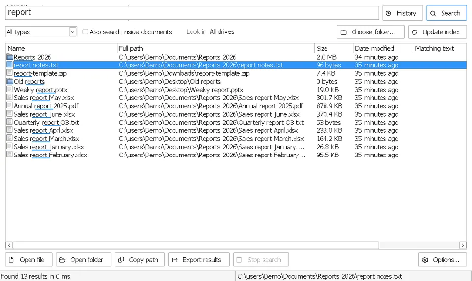

InstaFind™ Instant file search
Find any file on your PC as you type, in English or Arabic, even inside PDF and Word documents.
Time to find a file, in our test on Windows
- أحمد = احمد
- Inside PDF, Word & Excel
- Ctrl + Alt + F
- Single exe
Free · Open source · Windows 10 & 11
Four small apps that start instantly, work without internet and keep your files on your PC, in Arabic and English.
InstaFind
The apps
All free, for Windows 10 and 11, and InstaWords also in your browser.
Find any file on your PC as you type, in English or Arabic, even inside PDF and Word documents.

Reminders that stay on screen until you deal with them, with flexible repeats and verified backups.

Chat and code with AI models on your own PC through Ollama, fully offline, with assistants that answer only from your files.

Write any amount in words for cheques and invoices, in Arabic, English or French. In your browser or as a Windows app, even offline.
100%offline
Every app runs entirely on your PC. The internet is only used to check for updates, or to download an AI model you pick in Lemon.
 InstaFind · file search
InstaFind · file search
It indexes all your drives once, then shows results while you type. And it understands Arabic the way people actually write it.
Press Ctrl + Alt + F anywhere to open the search box.
InstaFindA fair, quick look at popular ways to find files on Windows.
| Feature | InstaFind | Everything | Listary | Windows Search |
|---|---|---|---|---|
| Price | Free | Free | Free, Pro is paid | Built in |
| Open source | Yes · MIT | No | No | No |
| Understands Arabic spelling variants (أحمد = احمد) | Yes | No | No | No |
| Search inside PDF and Word files | Yes | Slow, by command | No | Yes |
| Instant results across all drives | Yes | Yes | Yes | No · Indexed folders only |
Based on each product’s public website, November 2026. Something out of date? Tell us.
 Remember Me · tasks & reminders
Remember Me · tasks & reminders
A task, note and reminder app for Windows whose alerts stay on screen until you deal with them, so nothing gets lost among notifications.
Remember Me Lemon · local AI chat
Lemon · local AI chat
A ChatGPT-style app for local Ollama models. Your chats and files never leave your PC.
Release notes & all versionsNeeds Ollama for the AI models.Source on GitHub
Lemon InstaWords · Tafqit
InstaWords · Tafqit
A native Windows app that writes any amount in words for cheques and invoices, in Arabic, English and French. Fast, light and fully offline.
Windows 10/11 · 2.5 MB · per-user install, no admin rights · portable version & release notes
InstaWordsWhy FastKiwi
Small tools that respect your PC, your privacy and your language.
Everything runs on your PC. No account, no servers, no waiting.
Your files and chats never leave your PC, and nothing is tracked. Read the privacy page.
Proper right-to-left layout everywhere, and search that understands Arabic spelling.
All code is public under the MIT license for anyone to review. Read it on GitHub.
Starts instantly and stays out of your way. Most of our apps are a single file with no installer.
No ads, no subscriptions, no paid tier. Updates arrive in one click, and every release is built and tested automatically.
Community
Every report, idea and star makes the apps better for everyone.
The files are not code-signed yet, so Windows SmartScreen doesn’t recognise the publisher. Click “More info”, then “Run anyway”. All the code is public for review, and every release is built automatically from it.
New programs that aren’t code-signed are sometimes flagged by mistake (a “false positive”), especially small single-file apps. Download only from this site, check the file with a second scanner such as VirusTotal if you like, and tell us so we can report it to the antivirus maker.
Yes. Everything runs on your PC. The internet is used only to check for updates, to download an AI model in Lemon (Lemon talks to Ollama, which runs on your own PC) and for InstaFind’s exchange rates. The privacy page lists every connection.
Apps that come with an installer, like Remember Me and InstaWords, are removed from Windows Settings › Apps › Installed apps, like any other program. Single-file apps such as InstaFind and Lemon don’t install anything: close the app and delete the .exe file.
Yes. They are completely free and open source under the MIT license, with no ads or subscriptions.
Windows 10 and 11. InstaFind also runs on ARM64 and 32-bit PCs, and InstaWords also works in any modern browser.
See the Support page: it explains how to reach us, with or without a GitHub account, and what to include. Reports and ideas are welcome in English or Arabic.
Support
Check the FAQ and the release notes first. To report a problem or suggest an idea, in English or Arabic, see the Support page: how to reach us without a GitHub account and what to include. With a GitHub account, you can also open an issue on the app’s GitHub page.
Please mention your Windows version and the app version. Issues on GitHub are public, so don’t include personal files or information.
Small apps that do the right thing, fast.